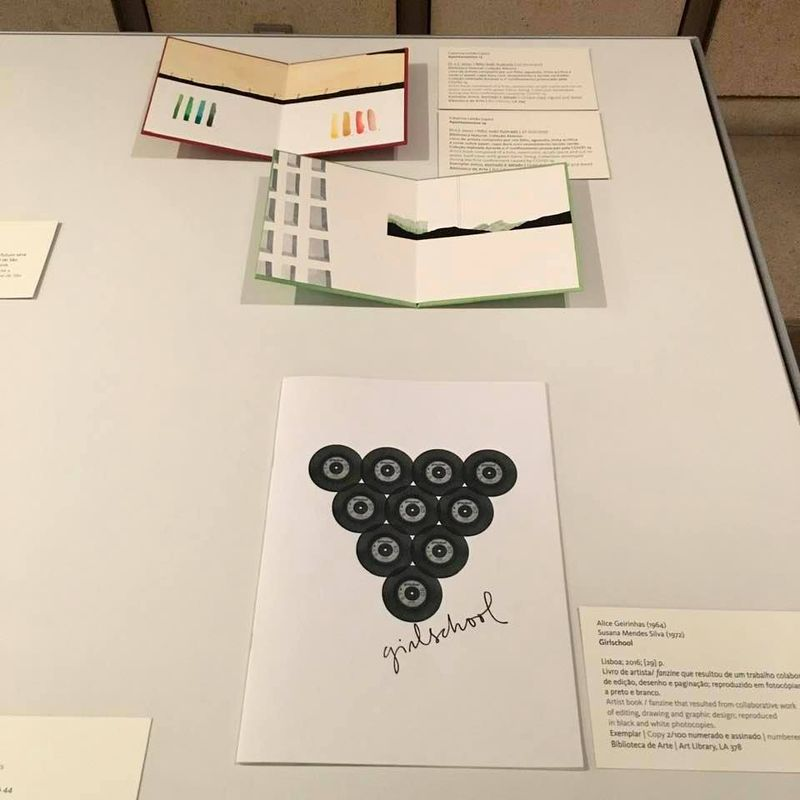

Coleção Abismo na Fundação Calouste Gulbenkian


Livros de Artista de Artistas Mulheres,
curadoria de Ana Barata,
https://gulbenkian.pt/agenda/livros-de-artista-de-artistas-mulheres/
26 junho – 20 setembro 2021

Livros de Artista de Artistas Mulheres,
curadoria de Ana Barata,
https://gulbenkian.pt/agenda/livros-de-artista-de-artistas-mulheres/
26 junho – 20 setembro 2021